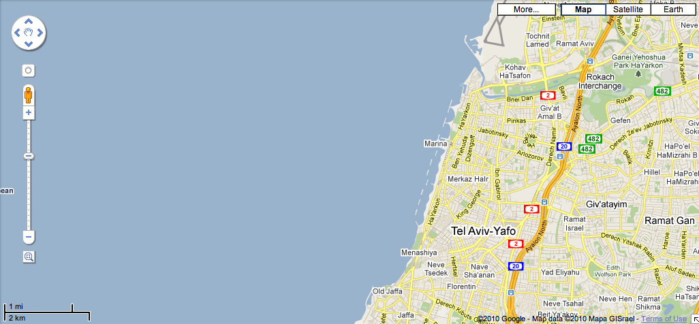

Making Beautiful Maps
....
by Alan Palazzolo and Thomas Turnbull
t
Why Map?
- Maps provide a unique perspective.
- Users are familiar with it. (i.e. Google Maps)
- Drupal is a great vehicle for data.
Tel Aviv on maps.google.com
Styles
- Define how features will display.
- Icon images.
- Colors and radius.
- and more.
a
Behaviors (Javascript)
Drupal.behaviors.openlayers_behavior_fullscreen = function(context) {
var fullscreenPanel;
var data = $(context).data('openlayers');
if (data && data.map.behaviors['openlayers_behavior_fullscreen']) {
var opts = data.map.behaviors['openlayers_behavior_fullscreen'];
// Create new panel control and add.
fullscreenPanel = new OpenLayers.Control.Panel(
{
displayClass: 'openlayers_behavior_fullscreen_button_panel'
}
);
data.openlayers.addControl(fullscreenPanel);
}
}
a
Credits
- Developers: zzolo, tmcw, phayes, strk, and more
- Presentation by: zzolo and tom_o_t
- OpenLayers Monster by Saman Bemel Benrud
- Technology used: jQuery, jQuery Presentation, SyntaxHighlighter, and Corner
- Presentation source and demo files on GitHub
a
Survey
Geo-Stuff BoF
- Drupal and Place.
- Talk all about geo-related things and Drupal.
- Today (25 Aug) at 16:00 in BoF Space 4.
2011 Alan Palazzolo and Thomas Turnbull